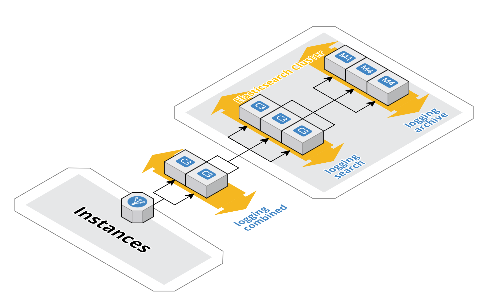

Logging
When running many services logs become significantly more difficult to read as you might need to SSH onto multiple instances in multiple regions and then tail multiple log files. Luckily at Hailo we store all logs centrally in ElasticSearch and provide an easy UI to read these logs. In this chapter we will explain how the system for fetching the logs of each box and indexing in ElasticSearch works.
How it works
The logging pipeline is split into 3 main parts with extra batch tasks that run periodically for maintaining the index. The first stage is the agent that extracts the logs from each instance, these logs are forwarded to the indexer which parses the logs and stores them in ElasticSearch. Each region has its own logging pipeline that is completely isolated from each other, this includes the ElasticSearch clusters.

Logging agent
The lumberjack agent is used to tail log files on each instance and forward them on to logstash, this agent watches the service logs directory (/opt/hailo/var/log/*) and starts tailing any new files it finds. The agent also tails the syslog and auditd output. Each log message additional metadata added to the event such as instance role, region and environment name.
Logging indexer
We use Logstash to index the incoming logs and store in ElasticSearch, this runs on the logging-combined boxes with an ELB in front of the instances. Logstash ingests log events from multiple inputs, currently the agents are configured to use the lumberjack protocol (on port 7200) and the filebeat protocol (on port 5044) 1.
When logstash receives a message it is passed through filters which parse the message and extract extra information about the log message. Once the message has been passed through the filter the resulting event and its metadata is stored in ElasticSearch. There are currently 4 filters setup (configuration is stored in puppet here):
- Service logs are fetched from any logs files in
/opt/hailo/var/log/*-console|error.log, the filter extracts the timestamp, log level, component as well as the service name and version. - Access logs are fetched from any logs files in
/opt/hailo/var/log/*-access.log, this filter parses logs in the apache common log format. - Syslog and AuditD logs are also fetched from every instance.
Log store
As mentioned previously we use ElasticSearch to store logs, the logs are stored in the Logstash format with the default lumberjack fields (file, host, timestamp). Logstash also stores the data for each day as a separate index in the format "logstash-yyyy-mm-dd".
Due to performance and storage reasons we use a tiered cluster. This allows us to deal with high throughput by taking advantage of SSD instance store backed instances while not sacrificing data retention. To achieve this tiered architecture we use two ASGs logging-search and logging-archive, each has the same cluster name so when they startup the join the same cluster. The logging-search ASG is comprised of 3 c3.xlarge instances, these instances have 2x40gb SSDs which allow for high write rates. The logging-archive ASG is comprised of 3 m4.large instances, these instances have gp2 EBS volumes which are currently set to 850gb, these volumes cannot handle the sustained high write rates but dont have any issues with the daily archive job.
To allow us to keep the logs for more than a single day a cron job is run at the start of each day which moves the index for the previous day to the archive tier, this task uses curator to actually make the changes. It is important that new data only gets written to the logging-search instances, to ensure that this is the case we use ElasticSearch's shard allocation filtering which will cause any new index to only write to the logging-search instances. We use curator again to update the shard filtering at the end of the day which moves the older indexes to the logging-archive instances.
Curator is used again to delete indexes, this is to prevent the disks from running out of space, this is executed by another cron job that runs once a day.
S3 backups
To prevent logs from being completely lost once the old indexes are deleted we also backup logs to S3, this is done by some bash scripts (hailo-log-tools). These scripts are executed by cron once an hour.
1. However as mentioned previously on the lumberjack agent is currently being used. Once the filebeat protocol becomes more stable this should replace lumberjack. ↩
Viewing logs
As mentioned logs can be viewed using a web UI, this can be accessed in live by going to this URL, It can also be found by clicking the "Logs" link on the homescreen. For logs in the live environment that are no longer in ElasticSearch (because they have been archived) you can find them in S3 in the directory hailo-backups-REGION-live/logs/YYYY-MM-DD/HH/.